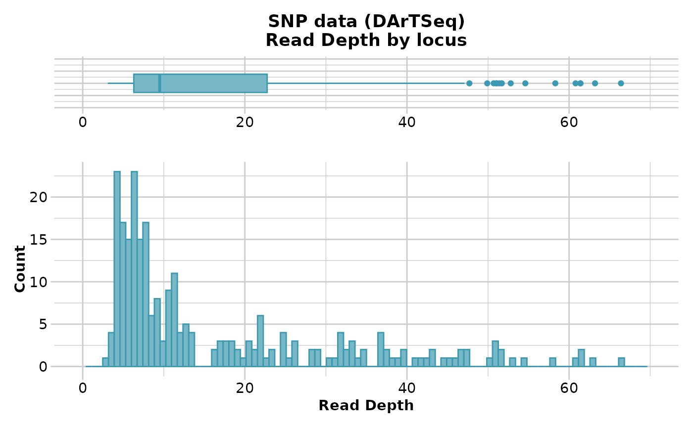
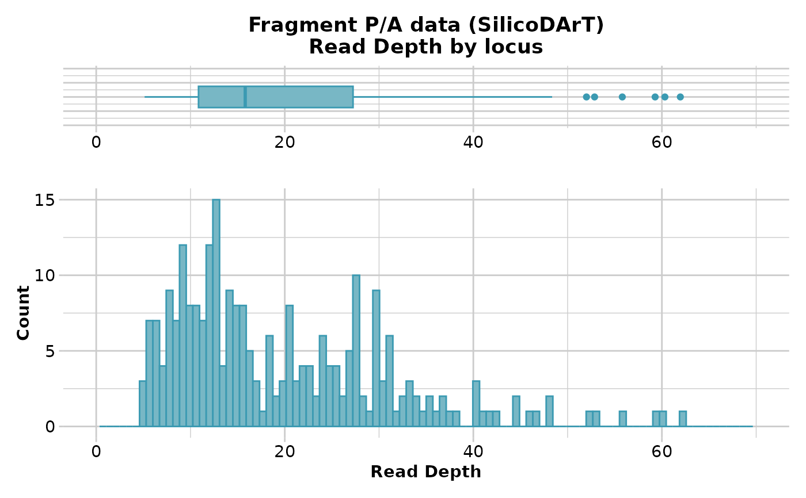

gl.report.rdepth.RdSNP datasets generated by DArT report AvgCountRef and AvgCountSnp as counts of sequence tags for the reference and alternate alleles respectively. These can be used to back calculate Read Depth. Fragment presence/absence datasets as provided by DArT (SilicoDArT) provide Average Read Depth and Standard Deviation of Read Depth as standard columns in their report. This function reports the read depth by locus for each of several quantiles.
gl.report.rdepth(
x,
plot.out = TRUE,
plot_theme = theme_dartR(),
plot_colors = two_colors,
save2tmp = FALSE,
verbose = NULL
)Name of the genlight object containing the SNP or presence/absence (SilicoDArT) data [required].
Specify if plot is to be produced [default TRUE].
Theme for the plot. See Details for options [default theme_dartR()].
List of two color names for the borders and fill of the plots [default two_colors].
If TRUE, saves any ggplots and listings to the session temporary directory (tempdir) [default FALSE].
Verbosity: 0, silent or fatal errors; 1, begin and end; 2, progress log; 3, progress and results summary; 5, full report [default 2, unless specified using gl.set.verbosity].
An unaltered genlight object
The function displays a table of minimum, maximum, mean and quantiles for
read depth against possible thresholds that might subsequently be specified
in gl.filter.rdepth. If plot.out=TRUE, display also includes a
boxplot and a histogram to guide in the selection of a threshold for
filtering on read depth.
If save2tmp=TRUE, ggplots and relevant tabulations are saved to the session's temp directory (tempdir).
For examples of themes, see
Other report functions:
gl.report.bases(),
gl.report.callrate(),
gl.report.diversity(),
gl.report.hamming(),
gl.report.heterozygosity(),
gl.report.hwe(),
gl.report.ld.map(),
gl.report.locmetric(),
gl.report.maf(),
gl.report.monomorphs(),
gl.report.overshoot(),
gl.report.parent.offspring(),
gl.report.pa(),
gl.report.reproducibility(),
gl.report.secondaries(),
gl.report.sexlinked(),
gl.report.taglength()
# SNP data
df <- gl.report.rdepth(testset.gl)
#> Starting gl.report.rdepth
#> Processing genlight object with SNP data
#> Reporting Read Depth by Locus
#> No. of loci = 255
#> No. of individuals = 250
#> Minimum : 3.1
#> 1st quartile : 6.3
#> Median : 9.5
#> Mean : 16.60392
#> 3r quartile : 22.75
#> Maximum : 66.4
#> Missing Rate Overall: 0.12
#>

#> Quantile Threshold Retained Percent Filtered Percent
#> 1 100% 66.4 1 0.4 254 99.6
#> 2 95% 50.7 13 5.1 242 94.9
#> 3 90% 41.0 26 10.2 229 89.8
#> 4 85% 34.2 39 15.3 216 84.7
#> 5 80% 28.9 52 20.4 203 79.6
#> 6 75% 23.0 64 25.1 191 74.9
#> 7 70% 20.0 77 30.2 178 69.8
#> 8 65% 16.2 90 35.3 165 64.7
#> 9 60% 12.1 102 40.0 153 60.0
#> 10 55% 10.8 116 45.5 139 54.5
#> 11 50% 9.5 129 50.6 126 49.4
#> 12 45% 8.1 143 56.1 112 43.9
#> 13 40% 7.5 157 61.6 98 38.4
#> 14 35% 7.0 167 65.5 88 34.5
#> 15 30% 6.5 182 71.4 73 28.6
#> 16 25% 6.3 192 75.3 63 24.7
#> 17 20% 5.6 205 80.4 50 19.6
#> 18 15% 4.9 217 85.1 38 14.9
#> 19 10% 4.4 232 91.0 23 9.0
#> 20 5% 4.2 244 95.7 11 4.3
#> 21 0% 3.1 255 100.0 0 0.0
#> Completed: gl.report.rdepth
#>
df <- gl.report.rdepth(testset.gs)
#> Starting gl.report.rdepth
#> Processing genlight object with Presence/Absence (SilicoDArT) data
#> Reporting Read Depth by Locus
#> No. of loci = 255
#> No. of individuals = 218
#> Minimum : 5.1331
#> 1st quartile : 10.85063
#> Median : 15.80374
#> Mean : 19.76665
#> 3r quartile : 27.23879
#> Maximum : 61.95593
#> Missing Rate Overall: 0.04
#>

#> Quantile Threshold Retained Percent Filtered Percent
#> 1 100% 61.95593 1 0.4 254 99.6
#> 2 95% 42.37461 13 5.1 242 94.9
#> 3 90% 34.87028 26 10.2 229 89.8
#> 4 85% 31.09265 39 15.3 216 84.7
#> 5 80% 29.68246 52 20.4 203 79.6
#> 6 75% 27.23944 64 25.1 191 74.9
#> 7 70% 24.63218 77 30.2 178 69.8
#> 8 65% 22.64706 90 35.3 165 64.7
#> 9 60% 20.80000 102 40.0 153 60.0
#> 10 55% 18.45000 115 45.1 140 54.9
#> 11 50% 15.80374 128 50.2 127 49.8
#> 12 45% 14.65041 141 55.3 114 44.7
#> 13 40% 13.52212 154 60.4 101 39.6
#> 14 35% 12.59427 166 65.1 89 34.9
#> 15 30% 11.83824 179 70.2 76 29.8
#> 16 25% 10.83333 192 75.3 63 24.7
#> 17 20% 10.00000 205 80.4 50 19.6
#> 18 15% 8.92663 217 85.1 38 14.9
#> 19 10% 7.78068 230 90.2 25 9.8
#> 20 5% 6.26380 243 95.3 12 4.7
#> 21 0% 5.13310 255 100.0 0 0.0
#> Completed: gl.report.rdepth
#>